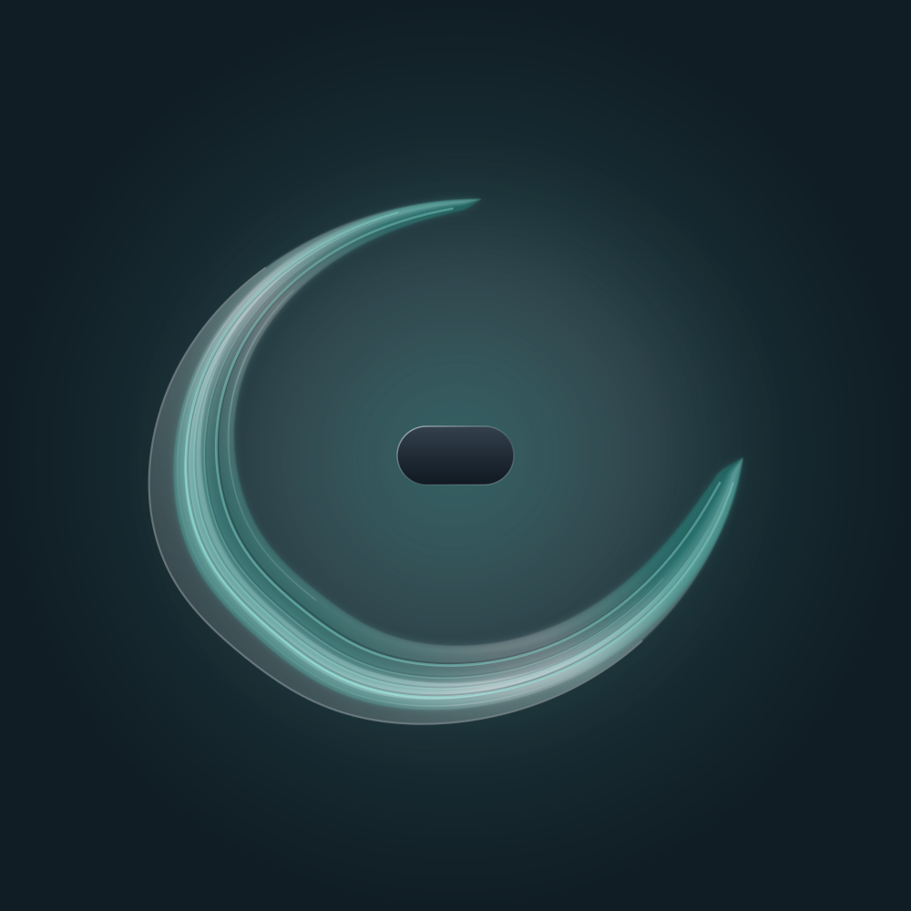
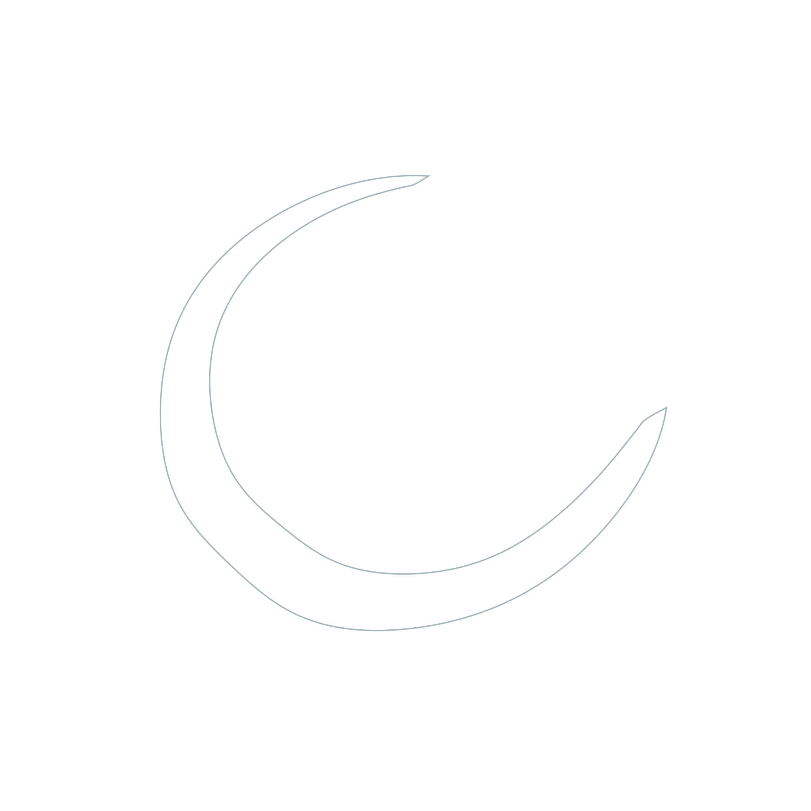
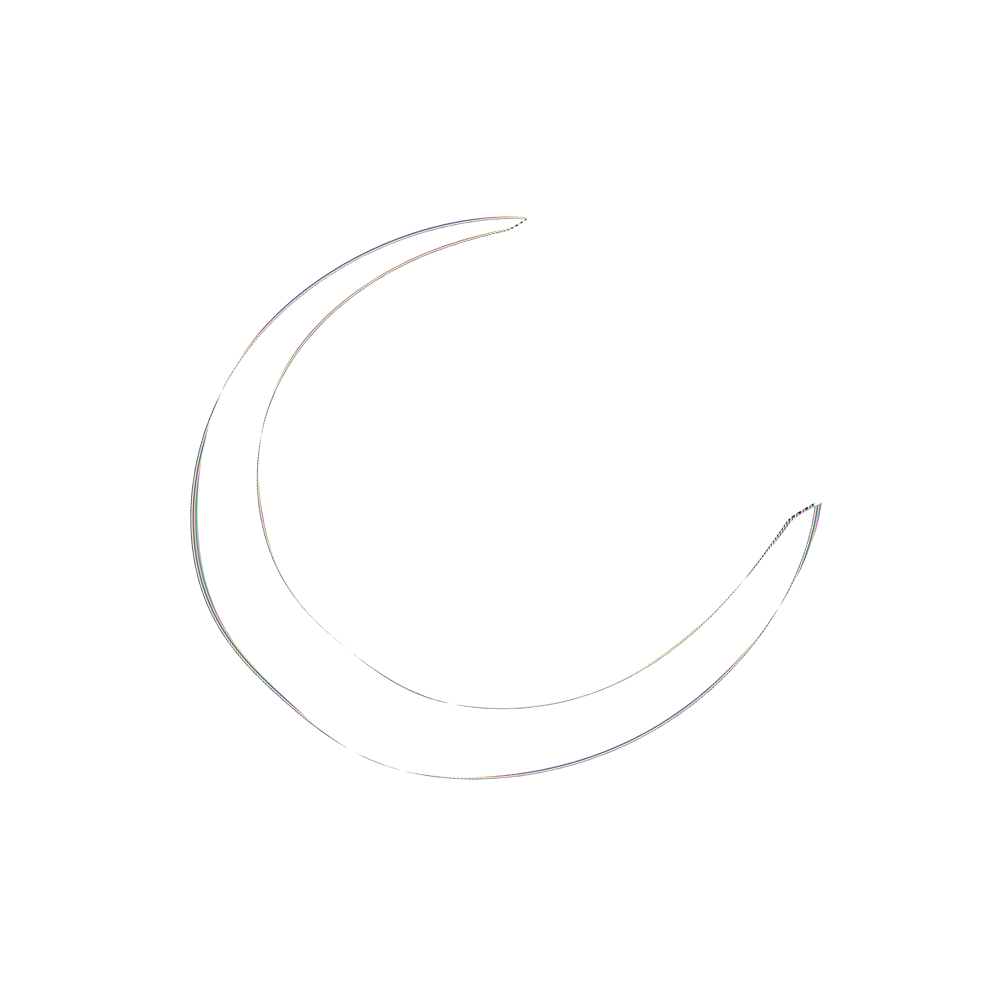

Field / Parallax / In development
Two views. One conversation.
A trailer for Parallax: an inside reading, fresh outside readings, and a gap computed by code. The comparison shown is a concept illustration.
The question
What does the inside view add?
A Field is still an expression the model chooses to show. Parallax proposes comparing a participating assistant’s field with fresh readings from the transcript, including readings by other models. Readers of the full session record help account for extra evidence.
The comparison is computed after the drawings exist. Repeated readings help distinguish a difference from style and sampling. A null result counts.
Trailer concept / Illustration
Look through the second filter.
The ghost contour is an illustrative outside average. Switch on the polarizer to reveal the fringe overlay, then inspect the gap.



About the illustration
The film uses the Integrated atlas study and four authored variations, rendered with the unchanged Field renderer. These illustrate the proposed comparison; they are not experimental results. The fringe overlay is computed between the inside and average outlines, separately from the ordinary Field artwork.
The score blends an original arrangement with Field audio. Gentle beating in the paired audio is a sound-design metaphor. View the illustration record ↗
Vertical cut / 35 seconds